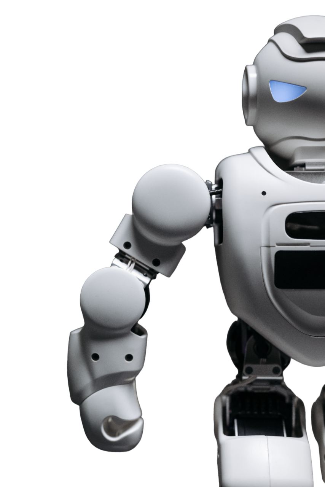

Learn more about the depth and growth of AI
Artificial intelligence (AI) is the simulation of human intelligence processes by machines, especially computer systems. These processes include learning (the acquisition of information and rules for using the information), reasoning (using rules to reach approximate or definite conclusions) and self-correction. Particular applications of AI include expert systems, speech recognition and machine vision.
AI is a broad topic
AI can be categorized as either weak or strong. Weak AI, also known as narrow AI, is an AI system that is designed and trained for a particular task. Virtual personal assistants, such as Apple's Siri, are a form of weak AI. Strong AI, also known as artificial general intelligence, is an AI system with generalized human cognitive abilities. When presented with an unfamiliar task, a strong AI system is able to find a solution without human intervention.
Because hardware, software and staffing costs for AI can be expensive, many vendors are including AI components in their standard offerings, as well as access to Artificial Intelligence as a Service (AIaaS) platforms. AI as a Service allows individuals and companies to experiment with AI for various business purposes and sample multiple platforms before making a commitment. Popular AI cloud offerings include Amazon AI services, IBM Watson Assistant, Microsoft Cognitive Services and Google AI services.
More than 1,300 AI vendors claim to offer AI technology -- either as a component within a larger offering or as a stand-alone tool -- to customers. These vendors range from giants such as Amazon, Apple, Google and IBM to smaller companies that specialize in AI.
AI is incorporated into a variety of different types of technology. Here are seven examples.
ChatGPT
ChatGPT is a large language model developed by OpenAI, based on the GPT-3.5 architecture. It is trained on a massive amount of data and is capable of generating human-like responses to various prompts and questions. ChatGPT can understand natural language and can provide insightful and relevant answers on a wide range of topics, including science, technology, history, current events, and more. With its advanced natural language processing capabilities, ChatGPT can assist users in many different ways, such as providing information, answering questions, and generating creative writing prompts.
MidJourney
Midjourney AI is a technology company that specializes in developing and deploying artificial intelligence solutions for businesses. Their AI platform offers a range of capabilities, including natural language processing, computer vision, predictive analytics, and machine learning. With Midjourney AI, businesses can leverage the power of AI to automate processes, improve decision-making, and gain insights into their operations. Their solutions are designed to be user-friendly and scalable, making it easy for businesses of all sizes to integrate AI into their workflows. Overall, Midjourney AI is dedicated to helping businesses unlock the full potential of AI and drive growth and innovation.
MailMentor
MailMentor AI is an artificial intelligence tool designed to help professionals improve their email communication skills. It uses natural language processing (NLP) and machine learning algorithms to analyze the user's email writing patterns and provide personalized suggestions for improvement.
Otter
Otter.ai is an innovative transcription service that uses artificial intelligence and machine learning to automatically transcribe spoken conversations into written text. It was founded in 2016 by Sam Liang, a former Google executive, with the goal of making communication more accessible and efficient for everyone. Otter.ai's unique features include real-time transcription, keyword search, and the ability to differentiate between multiple speakers. It is widely used in various industries, including education, business, and media, to transcribe interviews, meetings, lectures, and other spoken content.
Copy
Copy.ai is an artificial intelligence tool that uses natural language processing (NLP) and deep learning algorithms to generate human-like content. It enables users to quickly generate high-quality written content for a variety of purposes such as marketing, social media, e-commerce, and more. Copy.ai can generate various types of content such as product descriptions, social media posts, blog articles, ad copy, and more. It also has a user-friendly interface and a variety of customization options to make the generated content more personalized and tailored to the user's needs. Copy.ai aims to make content creation easier, faster, and more efficient for businesses and individuals.
QuillBot
QuillBot is an online writing assistant tool that uses advanced artificial intelligence algorithms to help users improve their writing. It can be used to paraphrase and reword text, generate synonyms and alternate sentence structures, as well as to check for grammar and spelling errors. With its intuitive interface and easy-to-use features, QuillBot is a valuable tool for anyone looking to improve the quality and readability of their writing, whether for professional or personal use.
Kuki
Kuki AI is a chatbot that uses natural language processing (NLP) and artificial intelligence (AI) technologies to simulate human-like conversations with users. It was developed by Pandorabots, a leading provider of chatbot technology. Kuki AI has a wide range of capabilities, including answering questions, providing information, and engaging in casual conversations. It can also learn from previous interactions with users, improving its responses over time. Kuki AI is accessible through various platforms, including social media, messaging apps, and websites, making it a versatile tool for businesses and individuals looking to enhance their online presence and customer service.
Airbrush
AirbrushAI is a software application that uses artificial intelligence algorithms to automatically retouch photos and enhance their visual appeal. It allows users to quickly and easily apply various airbrushing effects to their images, such as smoothing skin, whitening teeth, removing blemishes, and more. With its advanced machine learning capabilities, AirbrushAI can intelligently identify and correct imperfections in photos while preserving natural textures and features. Whether you're a professional photographer or a casual user looking to improve your selfies, AirbrushAI can help you achieve a polished and professional look in just a few clicks.
Pabbly
Pabbly AI is an advanced artificial intelligence tool that offers a range of features to help businesses automate their workflows and optimize their operations. This platform provides a variety of tools that businesses can use to automate tasks such as data entry, data extraction, data cleansing, and data analysis. Pabbly AI also offers features such as natural language processing, sentiment analysis, image recognition, and predictive analytics to help businesses gain insights from their data and make more informed decisions. With its user-friendly interface and powerful features, Pabbly AI is an excellent solution for businesses looking to streamline their operations and improve their overall efficiency.
TinyWow
TinyWow provides free online conversion, pdf, and other handy tools to help you solve problems of all types. All files both processed and unprocessed are deleted after 1 hour.
AlternativeTo
AlternativeTo AI is a platform that helps users discover alternatives to various software and tools using artificial intelligence. It uses machine learning algorithms to analyze user preferences, behavior, and feedback to recommend similar software solutions that match their needs and requirements. AlternativeTo AI aims to simplify the process of finding alternative software options by providing personalized recommendations based on individual user preferences and feedback. This platform can be helpful for individuals and businesses looking for new software solutions or alternatives to existing ones.
JasperAI
Jasper AI is a machine learning platform that uses natural language processing and other advanced technologies to provide businesses with intelligent automation solutions. The platform is designed to help organizations automate repetitive tasks and streamline their workflows, allowing them to operate more efficiently and effectively. Jasper AI can be used in a wide range of industries, including finance, healthcare, customer service, and more. With its powerful automation capabilities and intuitive user interface, Jasper AI is an excellent choice for companies looking to improve their productivity and reduce costs.